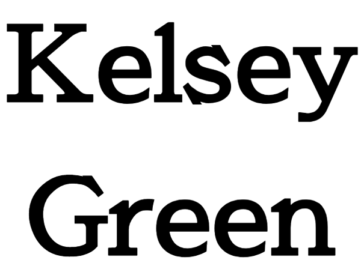
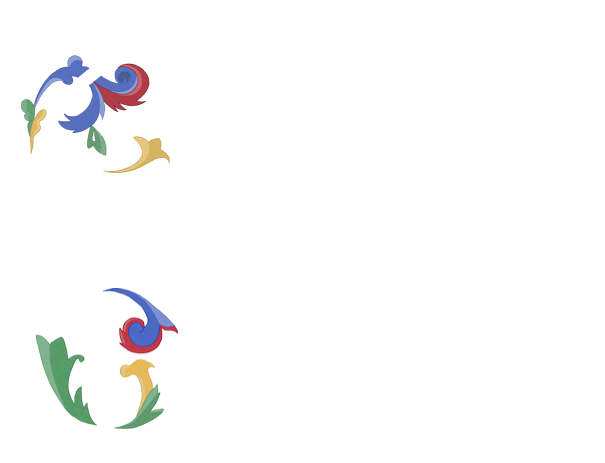
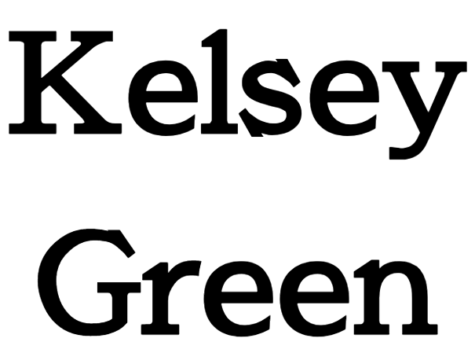
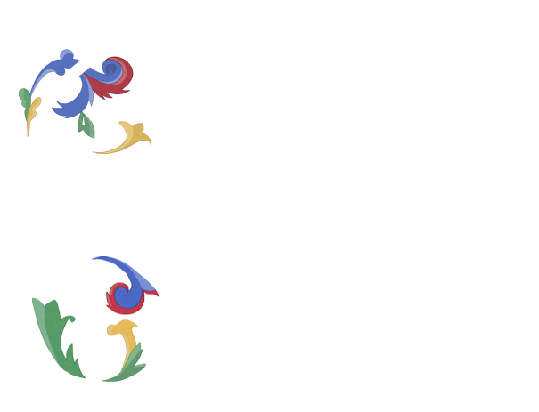

Tools: HTML/CSS | JavaScript | jQuery | jQueryUI | Bootstrap | Adobe Photoshop
As a part of my digital humanities program, I evaluated digital representations of museum displays and artifacts. Much like Benjamin writes in his seminal "Art in the Age of Mechanical Reproduction", artifacts and museum spaces lose the aura that makes them striking and special when digitally reproduced. It can be difficult to remain engaged with a museum collection that is not thoughtfully interpreted in digital space.
This little game, built with CSS and JavaScript, is one response to the question: how can we engage and educate remote "visitors" to a museum collection? For this game, I focused on real artifacts in the British Museum's collection, illustrating each item based on their images in the museum's online database.
Players move through three different museum rooms to collect artifacts, artifact labels, and a note. Then, players reassemble a broken artifact and return the artifacts and their labels to their proper places in the display. Finally, they use what they've learned to uncover the final, missing artifact.


Tools: HTML/CSS | JavaScript | Ajax | Express | NodeJS | Postgresql | Bootstrap | Google Sheets API
For years, West Seattle Symphony Orchestras have been fundraising with a gala auction. It's an event that requires a lot of dedicated work from volunteers: soliciting donations from individuals and businesses, selling tickets, keeping track of sold items and other donations, and creating reports. Although there is software available to make this process easier, the Orchestras are run largely by volunteers on a shoestring budget and there has never been room in the budget.
Auctave was built to meet West Seattle Symphony Orchestras' specific needs. It's a simple, usable app that tracks donors, item donations, and event attendees. Data is stored in a SQL database, and after the event, reports can be written to a Google spreadsheet for easy analysis, email merges, and review.


Tools: HTML/CSS | JavaScript | React | MongoDB | Express | NodeJS | React-Vis | Moments
Many people struggle to keep track of their spending and stick to a budget. Ginkgo was a group effort to design a site that makes money tracking simple and easy to visualize. Users can sign in, set up a monthly budget goal, and record expenditures of different categories. Cool graphs from React-Vis display donut charts for budget and total spending, and a bar chart to compare goals with actual spending.


Tools: HTML/CSS | JavaScript | Postgresql | Python | Django | Leaflet Maps | geoJSON
As a web developer, I spend a lot of my time online. I don't think a lot about my ability to access the internet until my connection goes down. But for some parts of the US, internet access is inaccessible or too slow to access much of today's web content. Rural areas are especially hard-hit.
In the spirit of the Rural Electrification Administration, which in the 1930's produced a series of iconic posters illustrating the potential of electricity, I wanted to create a website that recreated the experience of lagging internet while informing about internet access.
First, I wrote a python script to pull internet speed data and write it to a database. Using Leaflet, Mapbox, and a geoJSON file of US counties, I assembled a map showing variable internet speeds around the country. Visitors can also search by county and compare internet speeds directly.